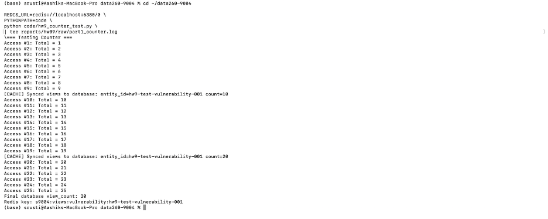
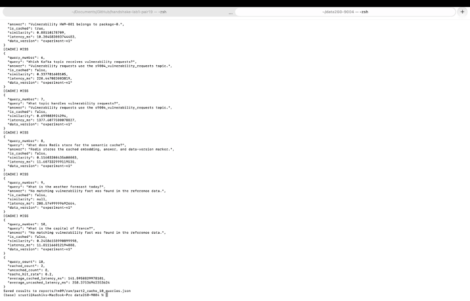
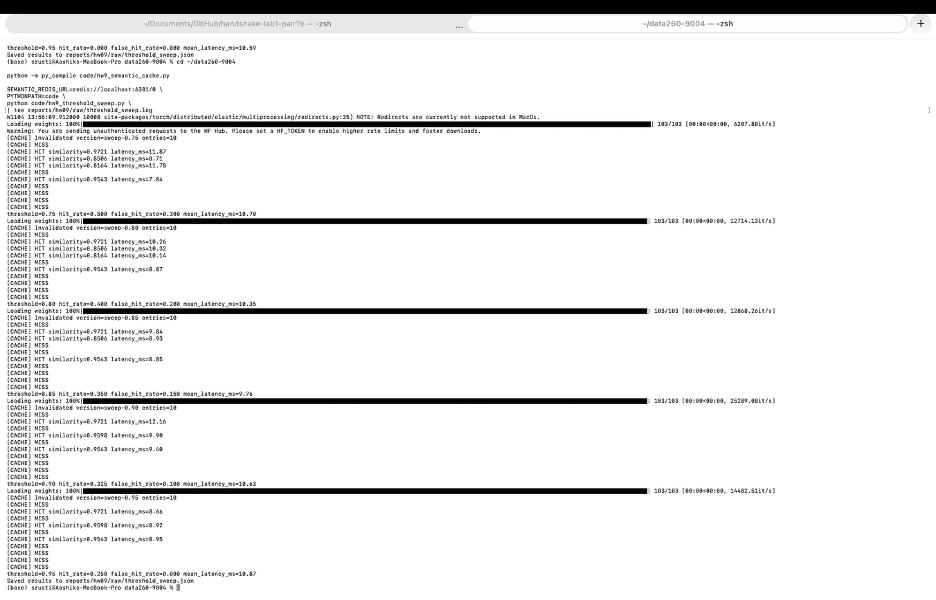
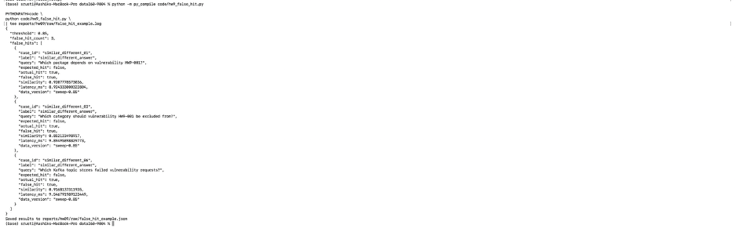
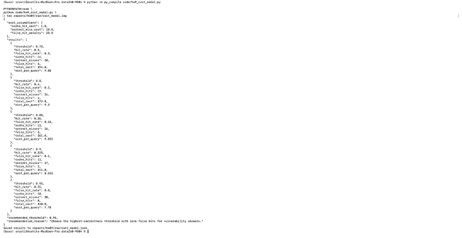
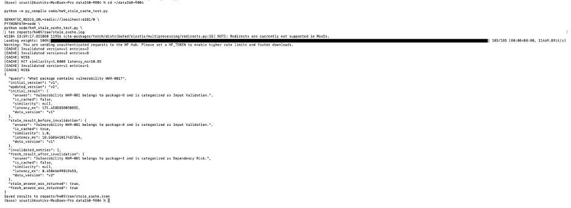
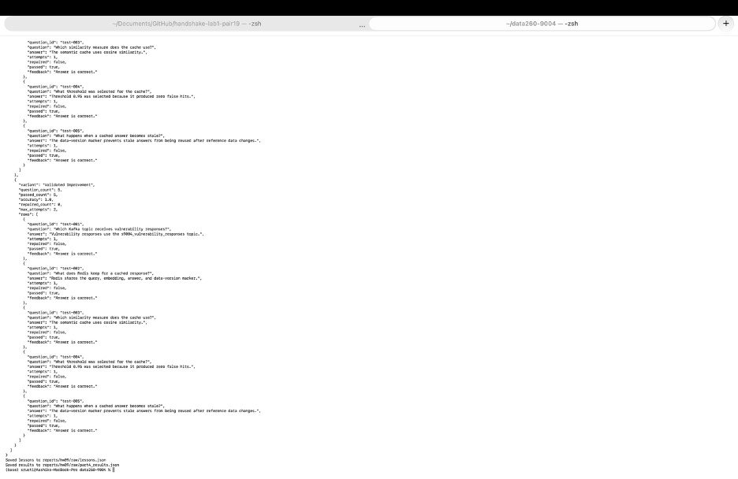

GitHub repository: https://github.com/shrustishetty-2401/data260-9004
s9004hw9This homework extends HW8 with Redis-backed counters, Redis Stack semantic caching, threshold and false-hit experiments, stale-data invalidation, and a two-agent answering and evaluation system.
The implementation uses Kafka from HW8, Redis, Redis Stack vector
search, and the all-MiniLM-L6-v2 Sentence Transformer
model.
The HW8 foundation provides the Kafka vulnerability request/response service and the multi-agent Kafka pipeline.
The primary domain entity is Vulnerability. The service
supports CREATE and GET operations, UUID entity identifiers, validation,
correlation IDs, duplicate-correlation handling, unknown-operation
errors, and missing-entity errors.
Kafka topics include:
s9004_vulnerability_requestss9004_vulnerability_responsess9004_inboxs9004_taskss9004_draftss9004_finals9004_dead_letterThe HW8 evidence demonstrated duplicate prevention, consumer restart recovery, poison-message dead-letter handling, and keyed ordering.
The Redis view counter is implemented in
code/hw9_view_cache.py and integrated with
code/hw8_worker.py.
Each successful vulnerability GET increments the Redis key:
s9004:views:vulnerability:<entity_id>The counter uses Redis INCR. The in-memory entity is
synchronized every ten views. The test performed 25 accesses and
produced synchronization events at counts 10 and 20.
The counter returns the current access count and preserves the Redis prefix requirement.
Figure 1. Redis-backed vulnerability view counter

Evidence:
raw/part1_counter.logcode/hw9_view_cache.pycode/hw9_counter_test.pyThe semantic cache is implemented in
code/hw9_semantic_cache.py.
Redis Stack stores:
The Redis Stack index is s9004:semantic:index, and
entries use the prefix s9004:semantic:entry:.
Configuration:
all-MiniLM-L6-v2A cache miss runs the answer function and stores the response. A cache hit returns the stored answer, similarity, latency, and data version.
The smoke test produced one initial miss, one exact-duplicate hit
with similarity 1.0000, one paraphrase hit with similarity
0.9706, and one unrelated-query miss. The unrelated query
correctly returned a no-match answer.
The required ten-query experiment included exact duplicates, paraphrases, new domain questions, and unrelated questions.
| Metric | Observed result |
|---|---|
| Total queries | 10 |
| Cached queries | 2 |
| Uncached queries | 8 |
| Cache hit rate | 20% |
| Average cached latency | 141.60 ms |
| Average uncached latency | 258.38 ms |
These are the measured results from the experiment. The cache reduced the number of agent executions for repeated or sufficiently similar queries, while unrelated and low-similarity questions followed the normal answer path.
Evidence:
raw/part2_cache_10_queries.jsonraw/part2_cache_10_queries.logFigure 2. Ten-query semantic cache experiment

Evidence:
raw/part2_cache_smoke.lograw/part2_cache_10_queries.jsonraw/part2_cache_10_queries.logcode/hw9_semantic_cache.pycode/hw9_semantic_cache_test.pyThe threshold experiment used exact duplicates, paraphrases, superficially similar questions requiring different answers, and unrelated questions.
| Threshold | Hit rate | False-hit rate | Mean latency | Total cost |
|---|---|---|---|---|
| 0.75 | 0.500 | 0.300 | 10.70 ms | 394.00 |
| 0.80 | 0.400 | 0.200 | 10.35 ms | 372.00 |
| 0.85 | 0.350 | 0.150 | 9.76 ms | 361.00 |
| 0.90 | 0.325 | 0.100 | 10.63 ms | 341.00 |
| 0.95 | 0.250 | 0.000 | 10.87 ms | 310.00 |
The cost model assigned a cost of 1 to a correct cache hit, 10 to a correct cache miss, and 30 to a false hit. Threshold 0.95 had the lowest total cost of 310 and produced zero false hits, so it was selected for deployment.
The following false hit occurred at threshold 0.85.
What package contains vulnerability HW9-001?Which package depends on vulnerability HW9-001?0.9207778573036Vulnerability HW9-001 belongs to package-0.Figure 3. Semantic-cache threshold sweep

Evidence:
raw/threshold_sweep.jsonraw/threshold_sweep.logcode/hw9_threshold_sweep.pycache_cases.yamlraw/false_hit_example.jsonraw/false_hit_example.logAt threshold 0.85, three false hits were observed. These
queries were semantically close to stored questions but required
different answers.
| Query | Similarity |
|---|---|
| Which package depends on vulnerability HW9-001? | 0.9208 |
| Which category should vulnerability HW9-001 be excluded from? | 0.8521 |
| Which Kafka topic stores failed vulnerability requests? | 0.9168 |
Figure 4. Full false-hit example

Evidence:
raw/false_hit_example.jsonraw/false_hit_example.logThe relative cost model was:
| Operation | Relative cost |
|---|---|
| Correct cache hit | 1 |
| Correct cache miss | 10 |
| False hit | 30 |
False hits receive the largest penalty because an incorrect
vulnerability answer is more harmful than recomputing a response. The
selected threshold is 0.95 because it produced zero false
hits.
Figure 5. Cache cost-model comparison

Evidence:
raw/cost_model.jsonraw/cost_model.logcode/hw9_cost_model.pyThe stale-data experiment first cached an answer under version
v1. The answer function was then changed, but the same
version returned the old cached answer. After invalidating version
v1, the query was executed under version v2
and returned the updated answer.
The cached answer depends on the vulnerability reference record for
HW9-001, including its package and category values. In this
implementation, the record state is represented by the cache data
version rather than a separate database relation table. The original
reference state was stored under data_version = "v1".
When the reference answer changed from package-0/Input Validation to
package-1/Dependency Risk, the existing v1 cache entry
became stale. A request using the unchanged v1 marker
returned the old answer, demonstrating the stale hit. The cache then
invalidated all entries for v1, and the updated answer was
stored under data_version = "v2".
This version-based strategy avoids returning answers created from older reference data. Its trade-off is that invalidating an entire version may remove still-valid entries, causing additional cache misses and recomputation.
Results:
stale_answer_was_returned: trueinvalidated_entries: 1fresh_answer_was_returned: trueThe data-version marker prevents stale answers from being reused after reference data changes.
Figure 6. Stale-cache invalidation

Evidence:
raw/stale_cache.jsonraw/stale_cache.logcode/hw9_stale_cache_test.pyPart 4 implements an Answering Agent and an Evaluator Agent. The system includes reference data, input-only training/validation/test datasets, validated lessons, controlled failure, bounded repair, and four experiment variants.
The datasets contain questions only. Expected answers are stored separately in the reference data and used by the evaluator.
Files:
data/reference_data.jsondata/train.jsonldata/validation.jsonldata/test.jsonlraw/lessons.jsonThe system allows a maximum of two attempts. The Evaluator Agent checks the answer and provides repair feedback when the first answer fails.
The Answering Agent receives each question and creates an initial answer. The Evaluator Agent compares that answer with the separate reference dataset and returns either PASS or REVISE, together with an explanation and correction feedback. If the result is REVISE, the Answering Agent produces one revised answer and the Evaluator checks it again. The system allows a maximum of two attempts and stops after the second attempt, even if the answer is still incorrect.
Lessons are created from repeated failure patterns and tested with
validation_data.json before being retained. A lesson is
kept only when failure cases improve or remain unchanged, previously
correct answers remain correct, and unrelated questions do not receive
unsupported answers.
One limitation is that the evaluator uses word-overlap matching against a small reference dataset. It may therefore accept an answer with similar wording even when the explanation is incomplete, or reject a correct answer phrased very differently.
| Variant | Correct answers | Incorrect answers | Average attempts | Average latency |
|---|---|---|---|---|
| Baseline | 4 | 1 | 1.00 | 0.0070 ms |
| Evaluator Repair | 5 | 0 | 1.20 | 0.0056 ms |
| Lesson Memory | 5 | 0 | 1.00 | 0.0040 ms |
| Validated Improvement | 5 | 0 | 1.00 | 0.0036 ms |
The Baseline variant intentionally failed on the stale-cache question. The Evaluator Repair variant detected the failure, used a second attempt, and corrected the answer. The Lesson Memory and Validated Improvement variants loaded the validated stale-data lesson before answering.
The Baseline intentionally failed on the stale-cache question. The Evaluator Repair variant detected the error and corrected it on the second attempt:
The complete revision sequence produced:
The complete revision sequence was:
{
"question_id": "test-005",
"attempts": 2,
"repaired": true,
"evaluation": "PASS",
"passed": true
}Figure 7. Answering and Evaluator Agent experiment

Evidence:
raw/part4_results.jsonraw/part4_experiment.lograw/lessons.jsoncode/hw9_part4_setup.pycode/hw9_part4_experiment.pyThe required input-only datasets are:
data/training_data.jsondata/validation_data.jsondata/test_data.jsonThe evaluator uses the separate reference dataset:
data/reference_data.jsonThe training, validation, and test datasets contain questions only and do not contain expected answers.
After the evaluator identified the stale-answer failure pattern, the system saved the following reusable lesson:
{
"lesson_id": "lesson_001",
"failure_pattern": "The answer incorrectly reuses a stale cached response after reference data changes.",
"correction": "Check the stored data-version marker and invalidate the old cache version before answering.",
"created_at": "2026-11-04",
"use_count": 2
}A later stale-cache question loaded lesson_001 and
reused its correction.
The lesson-reuse result was:
{
"lesson_loaded": true,
"lesson_id": "lesson_001",
"passed": true,
"use_count": 2
}Evidence: - raw/lesson_reuse.json - raw/lesson_reuse.log - raw/lessons.json
key = f"{PREFIX}:views:vulnerability:{entity_id}"
count = redis_client.incr(key)
if count % 10 == 0:
entities[entity_id]["view_count"] = count
print("Synced views to database")
return countvector = cache.embed(query)
match = cache._search(vector, data_version)
if match and match["similarity"] >= threshold:
return {
"answer": match["answer"],
"is_cached": True,
"similarity": match["similarity"],
}
answer = answer_function(query)
cache.redis_client.hset(
entry_key,
mapping={
"query": query,
"answer": answer,
"data_version": data_version,
"embedding": vector.tobytes(),
},
)
return {
"answer": answer,
"is_cached": False,
"similarity": None,
}class AnsweringAgent:
def __init__(self, variant, lessons=None):
self.variant = variant
self.lessons = lessons or {}
def answer(self, question_id, question):
if (
self.variant == "Baseline"
and question_id == "test-005"
):
return (
"The cache always returns the previous answer "
"without checking for stale data."
)
if (
self.variant in {
"Lesson Memory",
"Validated Improvement",
}
and question_id in self.lessons
):
return self.lessons[question_id]
return REFERENCE_ANSWERS[question_id]
class EvaluatorAgent:
def evaluate(self, question_id, answer):
expected = REFERENCE_ANSWERS[question_id]
passed = answer.strip() == expected.strip()
return {
"evaluation": "PASS" if passed else "REVISE",
"passed": passed,
"explanation": (
"The answer matches the reference facts."
if passed
else (
"The answer does not correctly address "
"the reference facts."
)
),
"feedback": (
"No revision needed."
if passed
else (
"Check the reference data and correct "
"the stale-data explanation."
)
),
}
### Data-Version Invalidation
~~~python
stored_version = cache_entry["data_version"]
if stored_version != current_data_version:
cache.invalidate_version(stored_version)
return answer_function(query)
return cached_answer
~~~
### Evaluator Repair and Two-Attempt Limit
~~~python
for attempt in range(1, 3):
answer = answering_agent.answer(question)
evaluation = evaluator_agent.evaluate(
question,
answer,
)
if evaluation["evaluation"] == "PASS":
break
if attempt == 1:
answer = answering_agent.revise(
answer,
evaluation["feedback"],
)
~~~
### Lesson Validation
~~~python
lesson = evaluator_agent.create_lesson(
failure_pattern,
correction,
)
if validation_passes(lesson):
lessons.append(lesson)
save_lessons(lessons)
else:
discard(lesson)
~~~
## Conclusions
Redis provides atomic counters, low-latency response retrieval, vector similarity search, cache invalidation, and reusable lessons.
The experiments demonstrate a trade-off between cache hit rate and answer correctness. Lower thresholds increase hits but also increase false hits. For this vulnerability domain, threshold `0.95` is the safest choice because it produced zero false hits.
The data-version marker protects against stale responses. When reference data changes, old entries can be invalidated and the next request computes a fresh answer.
The Evaluator Agent improves reliability by detecting incorrect answers and allowing one controlled repair attempt. Validated lessons provide reusable guidance for later questions.
## Reproducibility Evidence
- `RUN_LOG.txt`
- `METRICS.md`
- `AI_USE.md`
- `data/reference_data.json`
- `data/train.jsonl`
- `data/validation.jsonl`
- `data/test.jsonl`
- `raw/part1_counter.log`
- `raw/part2_cache_smoke.log`
- `raw/part2_cache_10_queries.json`
- `raw/threshold_sweep.json`
- `raw/false_hit_example.json`
- `raw/cost_model.json`
- `raw/stale_cache.json`
- `raw/lessons.json`
- `raw/part4_results.json`
## AI Use
AI assistance was used to draft Redis counter code, Redis Stack vector-search code, cache experiments, threshold analysis, stale-data invalidation, agent evaluation logic, datasets, and report text.
The student ran the commands locally, inspected outputs, corrected implementation issues, captured evidence screenshots, and made the final repository changes.
During testing, the initial vector search selected the nearest entry across all data versions before checking the version marker. The search was corrected to filter by `data_version` before KNN search.
The initial cache test also returned the vulnerability answer for an unrelated question because the answer function returned the same answer for every input. The answer function was corrected to return a no-match response for unrelated questions.
## Submission Contents
The HW9 submission includes the implementation files, Redis and Redis Stack experiments, reference data, input-only datasets, lessons, raw JSON results, raw logs, screenshots, metrics, AI-use documentation, and this report.
Final PDF target:
```text
reports/hw09/Shetty_HW9.pdf